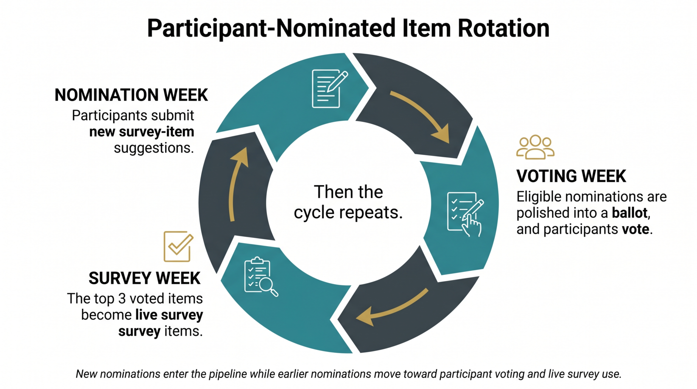

This page is the public hub for weekly Christian Thought Survey results. The newest survey page is featured first, followed by the current weekly survey status lanes and the participant-nominated item rotation.
Newest survey page
Week 2: Pornography and the Church
The Week 2 placeholder page is published before CTS invitations are sent. It names the topic, planned survey items, participant ballot, reporting schedule, and a short encapsulation linking to the June 16 refresh of the Week 1 report.
Survey status
Weekly survey status
This board gives readers a public progress snapshot for each weekly survey: what is open now, what has already been reported, and when to expect the next public update. Participant identities and raw response files are not published.
Participant-generated questions
How nominated items rotate into the survey
Participant-nominated items move through a rolling three-week pipeline. Participants first submit suggested survey items, eligible nominations are then polished into a ballot for participant voting, and the top 3 voted items become live 0-100 credence-slider survey items in a later weekly survey.

Survey structure How the weekly cycle works Expand to view the six-part weekly survey cycle.
Each Weekly Survey will include six parts:
- Last week's results summary and link: a brief summary and a link to the primary CTS website page containing the previous week's results and reports.
- One CTS-administered topic: the Featured Topic banner appears immediately before a ◉ Main topic... introduction line, followed by 12 related survey items from the CTS topic bank.
- Three participant-vote-determined questions: 3 additional live survey items chosen based on the previous week's participant vote. These are intentionally independent from the weekly CTS-administered topic.
- A participant-nominated item ballot: 7 AI-polished ballot items selected from the previous week's participant nominations, with AI-created seed items added only when fewer than 7 suitable participant nominations are available. Ballot items are selected for clarity, relevance, novelty, and likely participant tension.
- A text box: to suggest survey items to be voted on next week and possibly featured in the following week's survey.
- A preview of upcoming topics: The topics for the next three weeks will be featured to allow for mental preparation.
Participant-nominated ballot rule: Participant suggestions are reviewed by CTS with AI assistance, polished for clarity, neutrality, credence-slider suitability, breadth, orthogonality to the weekly topic, novelty, likely participant tension, and pastoral or theological relevance, and reduced to a 7-item ballot. Active participants rank those 7 items; the top 3 ranked eligible items become live participant-vote-determined survey items in the following week's survey.
The cycle is cumulative: participant suggestions submitted in one weekly survey are reviewed by CTS with AI assistance, polished, reduced to a 7-item ballot, ranked by active participants, and the top 3 ranked items become live survey items in the following week's survey. If fewer than 7 suitable participant nominations are available, CTS adds AI-created seed items to complete the ballot.
The regular rhythm is Tuesday-centered. First preliminary reports and refreshes to still-open preliminary reports are prepared on Tuesday morning, and the next survey's placeholder report page is published before the next CTS survey launches Tuesday evening. Invitations are sent through the CTS email invitation system in daily batches of up to 100 until all eligible participants have been invited.
Each weekly survey remains open for three weeks from the first invitation send. Preliminary reports are refreshed each Tuesday morning until the response window closes, with optional earlier updates when responses materially change, then marked final after the final export is reviewed.
Response rule: The 15 live survey items use credence sliders. The participant-nominated item ballot and suggestion text box are administrative inputs rather than survey-item responses.
What each report will include
- Issue: the weekly CTS-administered topic and the reason it was selected.
- Administered items: the exact wording of the 12 CTS-provided survey items.
- Participant-vote-determined questions: 3 additional live survey items chosen based on the previous week's participant vote.
- Credence results: summary statistics for slider responses across all live survey items.
- Subgroup comparisons: denominational, role, ministry-experience, or other comparisons when sample size permits.
- Participant-nominated item ballot: the ranked result from voting on last week's 7 AI-polished participant-nominated ballot items.
- Suggestion text box: a summary of suggested survey items when they can be shared responsibly.
- Last week's results summary and link: the brief summary and primary CTS website link included in the survey.
- Preview of upcoming topics: the topics for the next three weeks featured to allow for mental preparation.
- Data release: a link to raw or prepared data when privacy and formatting checks are complete.
Raw data will not include direct email identifiers in public files. Participant attributes may be grouped or suppressed when needed to avoid accidental identification. Free-text suggestions may be edited, grouped, or withheld before publication to protect privacy and keep item wording usable. See the Privacy & Data Release page for the current policy.